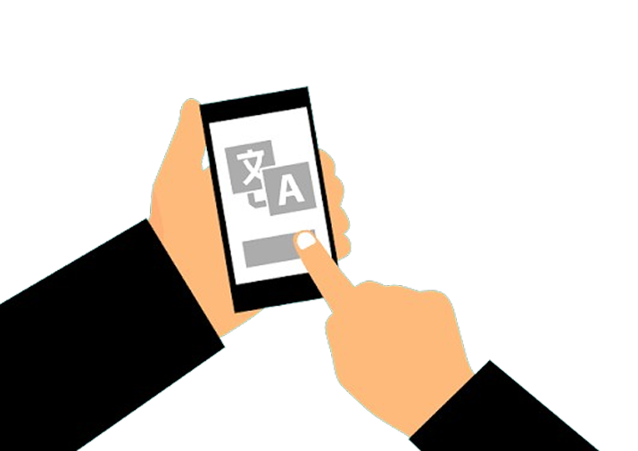

Transformando diálogos e informações em textos acessíveis para diferentes idiomas, culturas e públicos.

O tradutor lê e compreende o texto original, identificando seu contexto, público e objetivo.
O conteúdo é adaptado para o idioma de destino mantendo o significado original.
O texto traduzido é revisado para corrigir erros e melhorar a clareza e referências e expressões são ajustadas ao púlico-alvo.
O material é finalizado e preparado para publicação ou uso.
Além de converter palavras, o tradutor precisa considerar expressões culturais, contexto e diferenças linguísticas entre os idiomas.
Por isso tradutores utilizam dicionários, glossários e softwares especializados para garantir maior precisão e consistência.
Existem diversos tipos de tradução, como literária, técnica, jurídica, científica, audiovisual e comercial.
Acesse nossa experiência única de dublar!
Testar